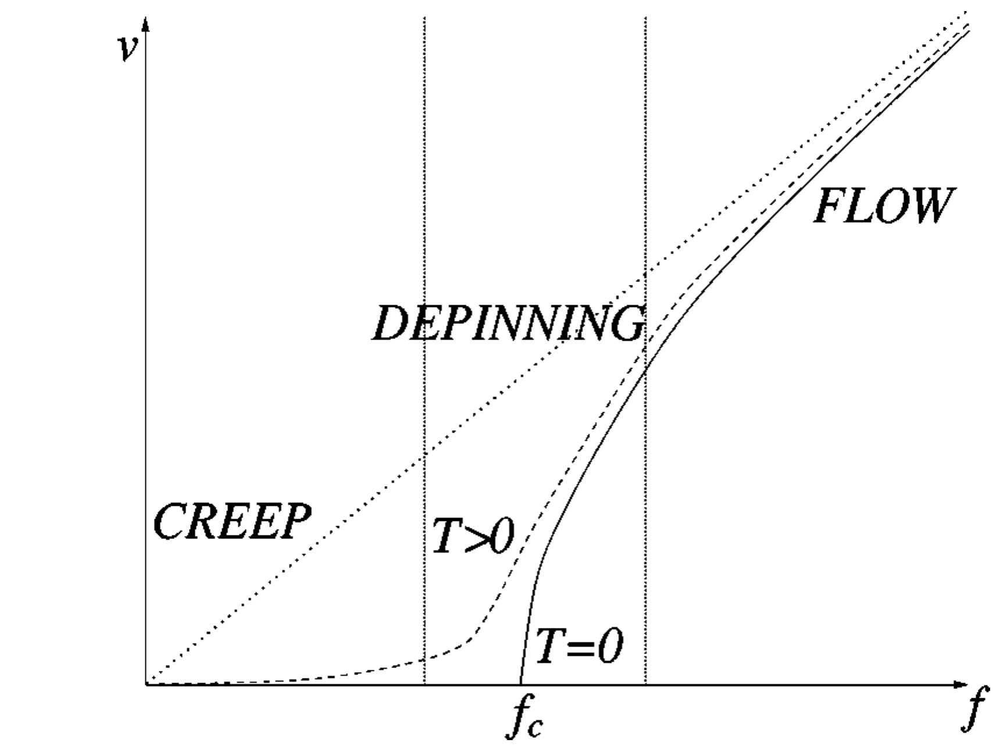
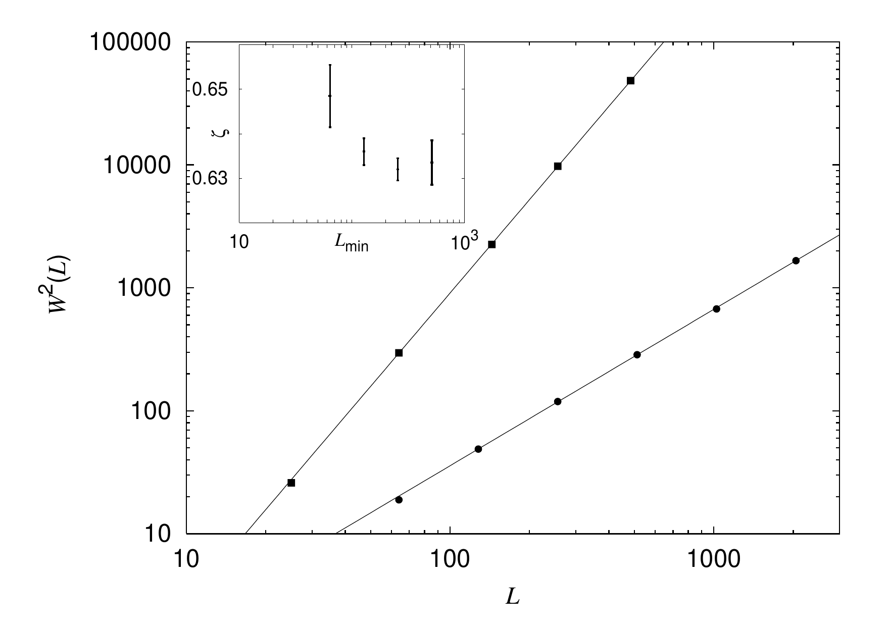
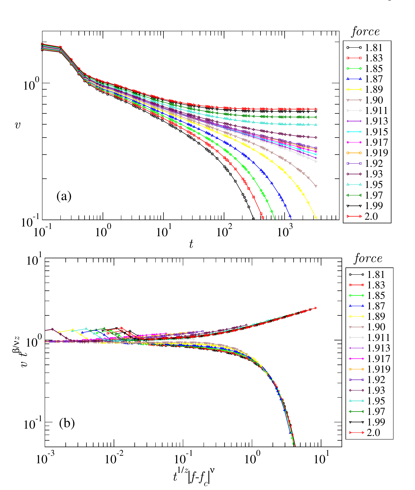
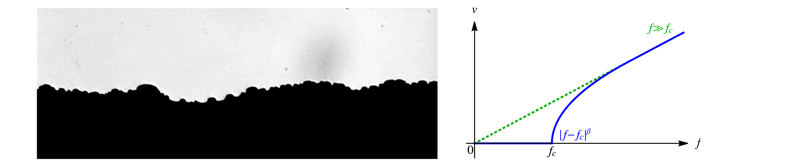

看到一个阈值，什么时候才真能叫退钉扎？
钉扎和蠕变告诉我们畴壁会被无序困住、会在低场热激活地慢慢爬行；退钉扎再往前一步：在零温理想化极限里，受驱界面在某个临界力 fc 附近出现持续运动，并伴随一整套相互约束的几何、动力学和长度尺度标度。真正要学的不是一条幂律，而是这套闭合证据链。
素材来源：Rosso 2003、Ferrero 2013、Wiese 2022 均使用项目 Google Drive · 03 Depinning, elastic-interface, RFIM theory 中的 PDF；Chauve 2000 当前不在该项目 Drive 文件夹，因此按项目 SOP 的例外规则，以 APS 正式发表记录 + arXiv v2 PDF 核验原文与 Fig. 1。作者原文均为可选择、可复制 HTML 真文本；论文图为对应 PDF 派生的无损 PNG，点击可查看原尺寸。
零温下钉扎态与持续运动的临界驱动力。
稳态速度开启：v ∼ (f−fc)β。
临界界面的粗糙几何指数。
相关长度 ξ ∼ |f−fc|−ν。
临界时间与长度：t ∼ ξz。
1 · Chauve 2000：先把蠕变、退钉扎、流动放进同一张相图
这张经典示意图的价值是先建立“区间”概念。T=0 时，低于 fc 的界面保持钉扎态，高于它才有非零渐近速度；T>0 时，热激活把严格的零速度区圆滑成蠕变。也就是说，实验里看到低场仍有极慢运动并不矛盾——它提醒你实验有限温度和理论零温临界点不是同一件事。
In the presence of disorder it is natural to expect that, at zero temperature, the system remains pinned and only polarizes under the action of a small applied force, i.e., moves until it locks on a local minimum of the tilted energy landscape. At larger drive, the system follows the force f and acquires a nonzero asymptotic velocity v. In the thermodynamic limit, it is believed that there exists a threshold force fc separating both states, and that a dynamical transition occurs at fc called depinning, where the velocity is continuously switched on, like an order parameter of a second-order transition in an equilibrium system.
Beyond fc, if one describes the depinning as a conventional dynamical critical phenomenon, the important quantities to determine are the depinning exponent β giving the velocity v ∼ (f − fc)β and the dynamical exponent z which relates space and time as t ∼ rz.
Chauve 把同一个受驱无序弹性界面放在温度—驱动力平面中理解：零温时存在真正的退钉扎阈值，阈值以下界面最终停止、阈值以上保持持续运动；有限温度则通过热激活把严格的零速度区变成蠕变区。因此“实验里低场还有一点速度”并不否定零温退钉扎理论。

实线 T=0 在 fc 前钉扎态；有限温度曲线在阈值以下出现蠕变；大驱动力进入流动。它是一张概念地图，不是一组实验数据。
作者真正证明了什么
这是一个受驱无序弹性体系的理论工作：有限速度/有限温度 FRG 给出 T=0 退钉扎与 T>0 蠕变的统一描述，并讨论临界指数、特征长度以及随机键在退钉扎下流向随机场不动点。
作者没有证明什么
Fig. 1 是理论示意图，不是某种铁电材料的实验 v–E 数据；它也没有证明任意矫顽场都是 fc。有限温度蠕变与零温退钉扎临界性必须区分。
2 · Rosso 2003：临界点不只有速度，还有临界几何 ζ
Rosso 等人用数值算法直接找到退钉扎的临界流形，并从其宽度 W²(L) 随系统尺寸的增长提取 ζ。最重要的教学点不是记住某个 ζ 数值，而是看到临界几何也必须做系统尺寸标度；而且改变弹性能后得到的普适类可以不同。
For the first time, we are thus able to unambiguously compute the object of most direct theoretical interest in this problem, namely the critical manifold, in dimensions d = 2, 3, 4. We compute the roughness exponent ζ from the disorder-averaged mean square deviations of the critical manifolds hc: W²(L) = ⟨(hc − ⟨hc⟩)²⟩ ∼ L2ζ for L → ∞.
The absence of systematic trends leads us to conclude that ζΔ² = 1.26 ± 0.01, ζΔ⁴ = 0.635 ± 0.005.
Rosso 等直接数值构造临界界面，并用临界界面的宽度随系统尺寸增长来提取粗糙度指数 ζ。这里最重要的是：临界几何也必须做多尺寸标度，而且改变弹性能形式会改变 ζ，因此指数不能脱离模型的弹性和维数单独搬用。

主图用系统尺寸 L 提取临界粗糙度；插图检查拟合下限 Lmin 对 ζ 的影响。这比在单一尺寸上“看起来像幂律”严格得多。
作者真正证明了什么
在明确的哈密顿量弹性流形模型中，作者直接求临界流形，并用 W²(L) ∼ L2ζ 做有限尺寸标度；不同弹性能得到显著不同的 ζ，说明有效弹性本身会影响临界类别。
作者没有证明什么
这不是对真实铁电 DW 的普适性测量；ζ 也不能脱离模型的维数、弹性和无序直接搬到滑移铁电。单独一个粗糙度指数仍不足以闭合退钉扎结论。
3 · Ferrero 2013：用非稳态松弛定位 fc，同时警惕标度修正
从平界面开始施加不同驱动力，f>fc 时速度最终饱和到有限值，f<fc 时最终掉到零，恰在临界点才期望 v(t) ∼ t−β/νz。这给出一种不必先跑到稳态的临界点定位方法，但作者同样强调：越靠近 fc，需要的时间和平均越长。
In Fig. 3 we observe the averaged string velocity behavior against time. When the applied force f is greater than the thermodynamic critical force fc, v(t) saturates to a finite value at a time which increases as we approach fc from above. On the other hand, for forces smaller than fc, v(t) goes to 0 after a transient, which is longer as we approach fc from below. Exactly at f = fc we expect v(t) ∼ t−β/νz after a microscopic time regime.
Of course, it is very difficult to hit exactly fc, but what we can do is to bound it from above and below. As we approach fc it takes longer and longer times (and requires better averages) to determine if a velocity curve for a given force is saturating or vanishing.
Ferrero 从平直界面出发观察速度随时间的松弛：驱动力高于 f_c 时速度最终饱和，低于 f_c 时最终衰减到零，临界附近则出现幂律式非稳态松弛。作者同时强调，介观交叉和标度修正会让有限时间内测到的“有效指数”产生系统偏差。

(a) 不同驱动力的原始松弛曲线在临界点两侧分别走向有限速度与 0；(b) 用 β、ν、z 和 fc 做联合缩放。单一幂律拟合被升级成多曲线一致性检查。
作者真正证明了什么
作者在连续 QEW 弹性线中系统研究从平界面出发的非稳态松弛，利用 f<fc、f≈fc、f>fc 的时间演化夹逼临界力，并展示介观标度修正会显著偏置有效指数。
作者没有证明什么
一张漂亮的坍缩不是普适性证明；这些指数属于其研究的 QEW 退钉扎类别。若滑移铁电模型含长程弹性、塑性、强各向异性或不同动力学，必须重新检验。
4 · Wiese 2022：β、ζ、ν、z 是一套相互约束的临界语言
Wiese 的综述把退钉扎最核心的量压缩得很清楚：临界附近出现发散相关长度 ξ，速度指数 β、粗糙指数 ζ、相关长度指数 ν 和动态指数 z 不是彼此独立的四个拟合参数。对于短程弹性的标准模型，标度关系可以把它们彼此约束。
Another important class of phenomena for elastic manifolds in disorder is the so-called depinning transition: applying a constant force to the elastic manifold, e.g. a constant magnetic field to the ferromagnet mentioned in the introduction, the latter will move if, and only if, a certain critical threshold force fc is surpassed, see figure 22.
A correlation length ξ is set by the distance to fc: ξ = ξf ∼ |f − fc|−ν. Remarkably, this relation holds on both sides of the transition. The new exponents z, β and ν are not independent, but related. Suppose that f > fc, and we witness an avalanche of extension ξ. Then its mean velocity scales as v ∼ u/t ∼ ξζ−z, implying β = ν(z − ζ).
Wiese 的综述把退钉扎看成一套相互约束的临界理论：相关长度在临界附近发散，速度、粗糙度、相关长度和动态指数之间存在标度关系。对数值工作而言，这意味着不能把 β、ζ、ν、z 当成四个彼此独立的拟合数字。

左：临界附近的粗糙界面；右：T=0 下 v 在 fc 后按 |f−fc|β 开启，并在远离临界后回到近似线性流动。
这一篇真正提供了什么
Wiese 2022 是综述而不是新的单一实验：它把退钉扎的相关长度、β、ζ、ν、z、标度关系、弹性与普适类放在同一理论框架中，适合用来检查前面三篇是否构成闭环。
这一篇不能替代什么
综述里的标度关系不能替代你自己的多尺寸数据、阈值收敛和独立可观测量；更不能因为“理论上有这套关系”，就宣布某个滑移铁电模拟已属于某普适类。
5 · Jeudy 2016：比“指数像不像”更强的测试，是跨材料势垒坍缩
Jeudy 等比较多种磁性薄膜、宽磁场和温度范围，在退钉扎阈值以下研究完整热激活蠕变。关键教学点不是把磁性材料的参数搬给滑移铁电，而是看普适性结论如何升级：先用每个体系自己的非普适尺度做归一化，再问不同材料是否落到同一个钉扎-能垒函数。
为什么它比单个 μ 更强
一个指数在有限窗口里相似，可能来自交叉区；跨材料、跨温度、跨场的归一化坍缩同时约束曲线形状和非普适尺度，证据要求更高。
对滑移铁电的正确用法
先证明自己的畴壁 / 无序 / 温度区间足以支持弹性界面描述，再把势垒/标度坍缩当作待检验假说；不能因为 Jeudy 得到普适函数，就预设滑移铁电必须服从。
6 · 热圆整：T>0 把尖锐的退钉扎临界点圆滑掉，ψ 该怎么测？
有限温度下，f<fc 已经有热激活，因此严格的钉扎态/运动态非解析点被圆滑。Bustingorry、Kolton 与 Giamarchi 对一维弹性线的数值研究使用一个新的热圆整指数 ψ：在独立知道的样本临界力 上测试
并进一步用联合标度函数检查场与温度是否由同一临界结构控制：
为什么“先知道 fc”很关键
有限温曲线本来就被热圆整；如果同时用这批数据自由调 fc 和 ψ，很容易把交叉区调成漂亮幂律。T=0 阈值应先独立闭合。
单样本 fc 什么时候合理
有限随机样本确实有自己的 fc(i)。理论工作可以在每个样本独立测得的 T=0 fc(i) 上评估热圆整，以去掉阈值分布展宽；但不能从同一批有限温速度数据事后给每个随机种子找最有利的 fc(i)。
一套最小但严谨的有限温测量顺序
固定几何、无序定义、L、dx 与独立阈值方案；先有 fc / fc(i)。
先用少数 T 和 f/fc 检查随机积分器、速度下限、所需观测时间、畴壁拓扑。
同一无序样本下跑多个热随机种子；不确定性不把这些内层重复冒充新的淬火无序样本。
深阈值下区间测蠕变；f≈fc 测热圆整。不要用一套拟合函数覆盖两个区间。
若速度标度存在候选关系，再检查有限温结构因子 / 粗糙度交叉区是否给出相容的特征长度。
若有限温触发成核、多畴壁或标度对区间极敏感，记录为映射失效 / 交叉区，而不是删掉“不漂亮”的运行。
6.6 · 坍缩验收判据：把“看起来叠上了”变成可否证的检验
有限尺寸坍缩很有说服力，也因此特别容易被分析自由度滥用。横轴可以移动 fc，纵轴可以调 β/ν，横轴尺度还能调 1/ν；如果再自由挑 L、场区间与插值曲线，几乎总能得到一张“更顺”的图。真正的任务不是追求视觉重合，而是提前限制这些自由度，并让没参与优化的数据有机会把标度假设否掉。
6.6.1 · 先冻结标度对象，再谈目标函数
例如测试
在看最终坍缩前至少冻结：可观测量定义、可用尺寸集合、场 / 约化驱动力区间族、fc 依据、插值 / 参考曲线规则、权重方案与目标函数。不能先看图，再删掉“最不听话”的 L 或场点。
| 自由度 | 应该怎样约束 | 危险做法 |
|---|---|---|
| fc | 继承独立阈值依据 / 不确定性 | 为了坍缩更漂亮反向调 fc |
| size set | 预先定义 core / 挑战尺寸s | 看残差后逐个删 L |
| x-区间 | 预定族，并报告敏感性 | 只保留自然重叠最好的窄区间 |
| master curve G | 固定插值/平滑复杂度 | 用任意高自由度曲线吸收 size-dependent 漂移 |
6.6.2 · 目标函数必须惩罚“不同 L 在重叠区不一致”
具体目标函数可以有多种实现；最低要求是它只在各尺寸共同覆盖的重标度 x 区间比较，并按来源层级不确定性 / 抽样不确定性合理加权。记为 Q坍缩 即可：
这里不要把 Q 的数值本身神化。重要的是：同一目标函数 必须用于主拟合、逐一留出尺寸、区间敏感性与留出尺寸预测；不能每次换一套“最有利”的评分标准。
6.6.3 · 逐一留出尺寸的正确问题不是“图还像不像”
每删掉一个 L，都应重新估计允许估计的标度参数与 Q坍缩，再记录：
6.6.4 · 留出尺寸预测比全数据坍缩更难作弊
一个更强的设计是预先留出至少一个挑战尺寸 Lhold：用核心尺寸冻结 fc / 指数比值 / 主曲线规则，然后才打开 Lhold。它不是再做一次拟合，而是问：
若留出尺寸失败，最有信息量的处理不是立刻重调参数，而是诊断：它显示标度修正、交叉区长度、几何依赖，还是原标度假设本身不适用。
6.6.5 · 标度修正是诊断，不是无限自由度
若残差随 L 呈系统趋势，可以测试最小标度修正，例如
但加入 ω / G1 后必须看到可复现的系统改善，并报告主指数对修正模型的敏感性。若每加一个修正参数指数都大幅移动，合理结论是“当前尺寸仍在交叉区”，不是“终于拟合出了精确普适类”。
6.6.6 · 两张图共享数据，就不是两次独立确认
fc(L) shift、临界速度标度、完整坍缩往往使用同一批尺寸 / 无序样本。它们可以形成很强的内部一致性，但不能因为画成三张分图就当成三份统计独立证据。真正更独立的交叉核验来自不同可观测量：例如粗糙度 / 结构因子、非稳态动力学或热圆整。
| 证据等级 | 最低要求 | 允许的措辞 |
|---|---|---|
| C0 · 目视 | 手工重标度后看似重合 | 仅为示意性坍缩 |
| C1 · 目标函数 | 冻结目标函数 + 不确定性传播 | 定量标度候选 |
| C2 · 稳健 | 逐一留出尺寸 + 端点 / 区间敏感性通过 | 已测试区间内支持有限尺寸标度 |
| C3 · 预测 | 留出尺寸无需重新调参即可落在主曲线上 + 独立可观测量交叉核验 | 较强的普适性证据，但仍受映射有效性约束 |
6.8 · 阈值推断阶梯：先证明运行有资格，再给 fc
在一般相场 / 弥散界面模型里，阈值不是“找一个让曲线最直的数”。它是一条逐级建立的证据链：零场初态稳定 → 每个受驱运行的数值状态有效 → 钉扎态 / 运动态 / 未解析判读有注册标准 → 单个淬火无序样本得到阈值区间或边界 → 跨独立来源做总体推断 → 最后才把阈值依据交给 β。
6.8.1 · 判据 0：E=0 自己都站不住，就不要开始阈值搜索
预先构造的畴壁在零场弛豫后不能继续发生系统性漂移、湮灭或额外成核。否则后面的“低场运动”可能只是初态制备松弛。
残差、NaN / 发散、能量或求解器特定的收敛指标必须满足预注册质检标准。数值上没站稳不能解释成“物理上钉扎态”。
如果目标可观测量假设一堵单值畴壁，零场时就先检查畴壁数量、交点数量与脱离主体的畴。
零场基线本身要跑到足够长，使后面加场初期的瞬态区间有可比较的时间尺度。
6.8.2 · 每个场运行先分类，再参与搜索
| 运行状态 | 最低证据 | 阈值搜索中怎么用 |
|---|---|---|
| 已解析运动态 | 排除瞬态后仍有持续推进；速度 / 位移判据对合理区间改动稳定 | 可作为运动态阈值上界 |
| 给定观测时长内的已解析钉扎态 | 在注册观测区间内无持续推进，且数值与拓扑质检均通过 | 可作为钉扎态阈值下界；措辞仍应带方案 / 观测时长条件 |
| 未解析 / 受观测时长限制 | 晚时运动与真正长期静止无法区分 | 不能替代钉扎态；延长观测时长或保留删失 |
| 数值无效 | 求解器 / 数值证明 / 数据完整性质检失败 | 不提供物理方向信息；不能据此缩阈值区间 |
| 拓扑-失效 | 单畴壁映射失效，但二维动力学本身可能有效 | 不能继续作为弹性线阈值样本；转入失效证据 |
6.8.3 · 阈值区间是区间证据，不是一个神奇小数
对独立淬火无序样本 i，最诚实的第一产物通常是一个阈值区间。自适应 / 二分搜索只是决定下一次把算力放在哪里；它不会把中间试过的场点变成新的独立样本。
只有有效钉扎态才能更新下界，只有有效运动态才能更新上界。未解析 / invalid 不改变阈值区间方向。
搜索停止条件应由预先定义的阈值区间宽度、相对容差或资源上限决定，而不是“看到一个顺眼的 fc 就停”。
若最高注册驱动仍是有效钉扎态，只得到 fc(i) > Emax 的下界；这是右删失，不是无限大阈值。
中间场数值失败时，不应用“更高场应该更容易动”的直觉替代实际运行数值证明；先修数值有效性。
6.8.4 · 单样本阈值与总体阈值不是一回事
淬火无序下，每个无序样本都可以有自己的 fc(i) 或阈值区间。论文里的总体推断应来自跨独立无序样本的分布，而不是把一个来源内的几十个场探针点当成 n。
| 对象 | 它是什么 | 不是什么 |
|---|---|---|
| 一个来源的阈值区间 | fc(i) 的区间 / 边界信息 | 整个无序样本集合的唯一 fc |
| 多个来源的 fc(i) | 总体分布 / 配对差值的基础 | 把所有自适应搜索得到的场点全部合并后的普通回归样本 |
| 删失来源 | 部分阈值信息 | 应静默删除的“坏样本” |
| 自助法重采样 | 传播来源层级不确定性 | 新增的无序样本 |
6.8.5 · β 只能消费冻结的阈值依据，不能反过来优化它
一旦阈值搜索 / 有限尺寸依据冻结，下游速度分析才能定义约化驱动力，例如 ε = (f − fc) / fc，并检查 v ∼ εβ 的稳定区间。最危险的做法是同时自由调整 fc、拟合区间与 β，直到双对数图最直。
要么固定独立阈值估计值，要么把阈值区间 / fc 不确定性显式传播到 β；不要把 fc 当隐藏拟合可调旋钮。
近临界速度的稳态区间必须与早期瞬态分开。长期交叉区会制造看似稳定的有效指数。
在预先定义的约化驱动力族上检查 β 对拟合区间的漂移；报告修正 / 交叉区，而不是只留最漂亮窗口。
β 通过只是 E2/E3 的一部分；ζ、有限尺寸、ν/z、拓扑与标度关系仍需独立闭合。
7 · 指数提取纪律：漂亮直线最容易骗人
Ferrero 2013 最值得继承的不是某组 QEW 指数，而是一个负面教训：在微观区间之后仍可能存在很长的 介观交叉区。在这个区间里，双对数图可以非常直，却给出系统偏置的有效指数。作者通过显式标度修正与更长时间/更大尺度才逼近渐近临界区间。
7.1 · 阈值先于 β：不要让 fc 成为隐藏拟合参数
对每个淬火无序样本，先用独立钉扎态/运动态或非稳态判据得到阈值区间 / fc(i)。未收敛的样本保留为删失或未解析，不用一个方便的全局 fc 覆盖。
不同 L 的 fc(i) 分布先分别汇总。样本、随机种子、场点不是同一级 n；不要把一个无序样本的多个场点当成独立阈值样本。
β 拟合的敏感性至少要同时扫 δf 下限、δf 上限、fc 不确定性、瞬态截断。一个实用诊断是局部有效斜率
7.2 · ζ 不应该只从一张粗糙畴壁图里出来
W(L) ∼ Lζ：需要多个系统尺寸，最直接检查全局粗糙度。
B(r)=⟨[u(y+r)−u(y)]²⟩ ∼ r2ζloc：最容易暴露可用尺度窗过窄、局域异常标度或等值线噪声。
S(q) ∼ q−(1+2ζs)：检查谱标度与 UV / 网格截止；标准自仿射情形才期待 ζs 与全局 ζ 相容。
先检查有限尺寸、去趋势、畴壁提取、悬垂与异常标度；不要平均成一个“最终 ζ”。
7.3 · 有限尺寸标度要做“删尺寸复核”
如果假设标准有限尺寸临界形式，可测试例如：
但这两式应该是待检验的标度假设，不是自动成立的作图模板。至少做一次逐一留出尺寸：每次删掉一个 L，重新估计 fc、β/ν、1/ν 与坍缩 quality。若删掉最大或最小尺寸后结论明显跳变，就说明结果仍被交叉区 / 有限尺寸 endpoint 控制。
| 结果层级 | 最少应通过 | 失败后怎么降级措辞 |
|---|---|---|
| 候选 β | 拟合-区间 + fc 扰动 | 有效非线性起始指数 |
| 候选 ζ | W / B / S(q) 尺度区间与提取敏感性 | 尺度依赖 / 异常粗糙度 |
| 候选 ν / 坍缩 | 多 L + 逐一留出尺寸 + 固定分析规则 | 有限尺寸交叉区，不支持普适性结论 |
| 普适性结论 | β, ζ, ν, z / 标度关系 + 拓扑判据 | 类退钉扎 / 仅限有效界面区间 |
把它变成一个靠谱的数值实验
用钉扎态/运动态判据、非稳态松弛或样本阈值分布，检查时间窗口与系统尺寸。
明确拟合窗口、离临界的距离、有限温度/有限时间交叉区，并报告不确定度。
从界面高度 / 结构因子 / B(r) 提取，并检查拟合尺度区间与系统尺寸。
至少证明相关尺度在靠近阈值时增长；理想情况下用多 L 数据做坍缩。
不要把 β、ζ、ν、z 当四个互不相干的“漂亮数字”。
先说明有效界面、elastic kernel（弹性核）、无序类别和温度区间，再与文献指数比较。